Member Search

|

By _efer_
TopCoder Member
Section 2
Max-Flow/Min-Cut Related ProblemsHow to recognize max-flow problems? Often they are hard to detect and usually boil down to maximizing the movement of something from a location to another. We need to look at the constraints when we think we have a working solution based on maximum flow - they should suggest at least an O(N³) approach. If the number of locations is large, another algorithm (such as dynamic programming or greedy), is more appropriate.
The problem description might suggest multiple sources and/or sinks. For example, in the sample statement in the beginning of this article, the company might own more than one factory and multiple distribution centers. How can we deal with this? We should try to convert this to a network that has a unique source and sink. In order to accomplish this we will add two "dummy" vertices to our original network - we will refer to them as super-source and super-sink. In addition to this we will add an edge from the super-source to every ordinary source (a factory). As we don't have restrictions on the number of trucks that each factory can send, we should assign to each edge an infinite capacity. Note that if we had such restrictions, we should have assigned to each edge a capacity equal to the number of trucks each factory could send. Likewise, we add an edge from every ordinary sink (distribution centers) to the super-sink with infinite capacity. A maximum flow in this new-built network is the solution to the problem - the sources now become ordinary vertices, and they are subject to the entering-flow equals leaving-flow property. You may want to keep this in your bag of tricks, as it may prove useful to most problems.
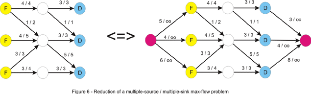
What if we are also given the maximum number of trucks that can drive through each of the cities in the country (other than the cities where the factory and the distribution center are located)? In other words we have to deal with vertex-capacities too. Intuitively, we should be able to reduce this to maximum-flow, but we must find a way to take the capacities from vertices and put them back on edges, where they belong. Another nice trick comes into play. We will build a network that has two times more vertices than the initial one. For each vertex we will have two nodes: an in-vertex and an out-vertex, and we will direct each edge x-y from the out-vertex of x to the in-vertex of y. We can assign them the capacities from the problem statement. Additionally we can add an edge for each vertex from the in to the out-vertex. The capacity this edge will be assigned is obviously the vertex-capacity. Now we just run max-flow on this network and compute the result.
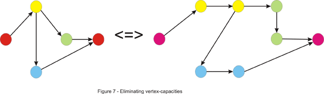
Maximum flow problems may appear out of nowhere. Let's take this problem for instance: "You are given the in and out degrees of the vertices of a directed graph. Your task is to find the edges (assuming that no edge can appear more than once)." First, notice that we can perform this simple test at the beginning. We can compute the number M of edges by summing the out-degrees or the in-degrees of the vertices. If these numbers are not equal, clearly there is no graph that could be built. This doesn't solve our problem, though. There are some greedy approaches that come to mind, but none of them work. We will combine the tricks discussed above to give a max-flow algorithm that solves this problem. First, build a network that has 2 (in/out) vertices for each initial vertex. Now draw an edge from every out vertex to every in vertex. Next, add a super-source and draw an edge from it to every out-vertex. Add a super-sink and draw an edge from every in vertex to it. We now need some capacities for this to be a flow network. It should be pretty obvious what the intent with this approach is, so we will assign the following capacities: for each edge drawn from the super-source we assign a capacity equal to the out-degree of the vertex it points to. As there may be only one arc from a vertex to another, we assign a 1 capacity to each of the edges that go from the outs to the ins. As you can guess, the capacities of the edges that enter the super-sink will be equal to the in-degrees of the vertices. If the maximum flow in this network equals M - the number of edges, we have a solution, and for each edge between the out and in vertices that has a flow along it (which is maximum 1, as the capacity is 1) we can draw an edge between corresponding vertices in our graph. Note that both x-y and y-x edges may appear in the solution. This is very similar to the maximum matching in a bipartite graph that we will discuss later. An example is given below where the out-degrees are (2, 1, 1, 1) and the in-degrees (1, 2, 1, 1).
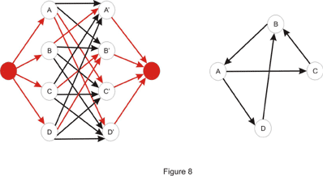
Some other problems may ask to separate two locations minimally. Some of these problems usually can be reduced to minimum-cut in a network. Two examples will be discussed here, but first let's take the standard min-cut problem and make it sound more like a TopCoder problem. We learned earlier how to find the value of the min-cut and how to find an arbitrary min-cut. In addition to this we will now like to have a minimum-cut with the minimum number of edges. An idea would be to try to modify the original network in such a way that the minimum cut here is the minimum cut with the minimum edges in the original one. Notice what happens if we multiply each edge capacity with a constant T. Clearly, the value of the maximum flow is multiplied by T, thus the value of the minimum cut is T times bigger than the original. A minimum cut in the original network is a minimum cut in the modified one as well. Now suppose we add 1 to the capacity of each edge. Is a minimum cut in the original network a minimum cut in this one? The answer is no, as we can see in Figure 8 shown below, if we take T = 2.
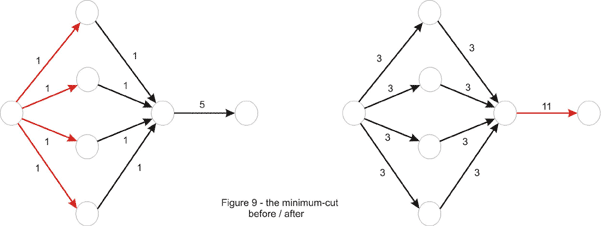
Why did this happen? Take an arbitrary cut. The value of the cut will be T times the original value of the cut, plus the number of edges in it. Thus, a non-minimum cut in the first place could become minimum if it contains just a few edges. This is because the constant might not have been chosen properly in the beginning, as is the case in the example above. We can fix this by choosing T large enough to neutralize the difference in the number of edges between cuts in the network. In the above example T = 4 would be enough, but to generalize, we take T = 10, one more than the number of edges in the original network, and one more than the number of edges that could possibly be in a minimum-cut. It is now true that a minimum-cut in the new network is minimum in the original network as well. However the converse is not true, and it is to our advantage. Notice how the difference between minimum cuts is now made by the number of edges in the cut. So we just find the min-cut in this new network to solve the problem correctly.
Let's illustrate some more the min-cut pattern: "An undirected graph is given. What is the minimum number of edges that should be removed in order to disconnect the graph?" In other words the problem asks us to remove some edges in order for two nodes to be separated. This should ring a bell - a minimum cut approach might work. So far we have only seen maximum flow in directed graphs, but now we are facing an undirected one. This should not be a very big problem though, as we can direct the graph by replacing every (undirected) edge x-y with two arcs: x-y and y-x. In this case the value of the min-cut is the number of edges in it, so we assign a 1 capacity to each of them. We are not asked to separate two given vertices, but rather to disconnect optimally any two vertices, so we must take every pair of vertices and treat them as the source and the sink and keep the best one from these minimum-cuts. An improvement can be made, however. Take one vertex, let's say vertex numbered 1. Because the graph should be disconnected, there must be another vertex unreachable from it. So it suffices to treat vertex 1 as the source and iterate through every other vertex and treat it as the sink.
What if instead of edges we now have to remove a minimum number of vertices to disconnect the graph? Now we are asked for a different min-cut, composed of vertices. We must somehow convert the vertices to edges though. Recall the problem above where we converted vertex-capacities to edge-capacities. The same trick works here. First "un-direct" the graph as in the previous example. Next double the number of vertices and deal edges the same way: an edge x-y is directed from the out-x vertex to in-y. Then convert the vertex to an edge by adding a 1-capacity arc from the in-vertex to the out-vertex. Now for each two vertices we must solve the sub-problem of minimally separating them. So, just like before take each pair of vertices and treat the out-vertex of one of them as the source and the in-vertex of the other one as the sink (this is because the only arc leaving the in-vertex is the one that goes to the out-vertex) and take the lowest value of the maximum flow. This time we can't improve in the quadratic number of steps needed, because the first vertex may be in an optimum solution and by always considering it as the source we lose such a case.
Maximum Bipartite Matching
This is one of the most important applications of maximum flow, and a lot of problems can be reduced to it. A matching in a graph is a set of edges such that no vertex is touched by more than one edge. Obviously, a matching with a maximum cardinality is a maximum matching. For a general graph, this is a hard problem to deal with.
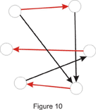
Let's direct our attention towards the case where the graph is bipartite - its vertices can be split into two sets such that there is no edge connecting vertices from the same set. In this case, it may sound like this: "Each of your employees can handle a given set of jobs. Assign a job to as many of them as you can."
A bipartite graph can be built in this case: the first set consists of your employees while the second one contains the jobs to be done. There is an edge from an employee to each of the jobs he could be assigned. An example is given below:
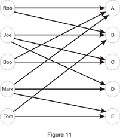
So, Joe can do jobs B, C and D while Mark wouldn't mind being assigned jobs A, D or E. This is a happy case in which each of your employees is assigned a job:
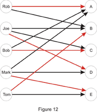
In order to solve the problem we first need to build a flow network. Just as we did in the multiple-source multiple-sink problem we will add two "dummy" vertices: a super-source and a super-sink, and we will draw an edge from the super-source to each of the vertices in set A (employees in the example above) and from each vertex in set B to the super-sink. In the end, each unit of flow will be equivalent to a match between an employee and a job, so each edge will be assigned a capacity of 1. If we would have assigned a capacity larger than 1 to an edge from the super-source, we could have assigned more than one job to an employee. Likewise, if we would have assigned a capacity larger than 1 to an edge going to the super-sink, we could have assigned the same job to more than one employee. The maximum flow in this network will give us the cardinality of the maximum matching. It is easy to find out whether a vertex in set B is matched with a vertex x in set A as well. We look at each edge connecting x to a vertex in set B, and if the flow is positive along one of them, there exists a match. As for the running time, the number of augmenting paths is limited by min(|A|,|B|), where by |X| is denoted the cardinality of set X, making the running time O(N·M), where N is the number of vertices, and M the number of edges in the graph.
An implementation point of view is in place. We could implement the maximum bipartite matching just like in the pseudocode given earlier. Usually though, we might want to consider the particularities of the problem before getting to the implementation part, as they can save time or space. In this case, we could drop the 2-dimensional array that stored the residual network and replace it with two one-dimensional arrays: one of them stores the match in set B (or a sentinel value if it doesn't exist) for each element of set A, while the other is the other way around. Also, notice that each augmenting path has capacity 1, as it contributes with just a unit of flow. Each element of set A can be the first (well, the second, after the super-source) in an augmenting path at most once, so we can just iterate through each of them and try to find a match in set B. If an augmenting path exists, we follow it. This might lead to de-matching other elements along the way, but because we are following an augmenting path, no element will eventually remain unmatched in the process.
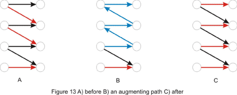
Now let's solve some TopCoder problems!
RookAttack
Problem Statement
This problem asks us to place a maximum number of rooks on a rows x cols chessboard with some squares cut out. The idea behind this might be a little hard to spot, but once this is done, we get into a standard maximum bipartite-matching problem.
Notice that at most one rook can be placed on each row or column. In other words, each row corresponds at most to one column where a rook can be placed. This suggests a bipartite matching where set A is composed of elements corresponding to every row of the board, while set B consists of the columns. For each row add edges to every column if the corresponding square is not cut out of the board. Now we can just run maximum bipartite-matching in this network and compute the result. Since there are at most rows * cols edges, the time complexity of the algorithm is: O(rows² * cols)
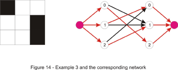
In the C++ code below BFS is used for finding an augmenting-path:
class RookAttack
{ // a list of the non-empty squares for each row
vector lst[300];
// in this arrays we keep matches found to every row and column
int row_match[300], col_match[300];
// we search for an augmenting path starting with row source
bool find_match(int source) {
// from[x] = the row-vertex that precedes x in the path
int from[300], where, match;
memset(from, -1, sizeof(from));
from[source] = source;
deque q;
q.push_back(source);
bool found_path = false;
while (!found_path && !q.empty()) {
// where = current row-vertex we are in
where = q.front(); q.pop_front();
// we take every uncut square in the current row
for (int i = 0; i < lst[where].size(); ++ i) {
match = lst[where][i];
// next = the row matched with column match
int next = col_match[match];
if (where != next) {
// no row matched with column match thus
we found an augmenting path
if (next == -1) {
found_path = true;
break;
}
// a check whether we already visited
the row-vertex next
if (from[next] == -1) {
q.push_back(next);
from[next] = where;
}
}
}
}
if (!found_path)
return false;
while (from[where] != where) {
// we de-match where from its current match (aux)
and match it with match
int aux = row_match[where];
row_match[where] = match;
col_match[match] = where;
where = from[where];
match = aux;
}
// at this point where = source
row_match[where] = match;
col_match[match] = where;
return true;
}
public:
int howMany(int rows, int cols, vector cutouts)
{ // build lst from cutouts; column j should appear in
row's i list if square (i, j) is present on the board
int ret = 0;
memset(row_match, -1, sizeof(row_match));
memset(col_match, -1, sizeof(col_match));
// we try to find a match for each row
for (int i = 0; i < rows; ++ i)
ret += find_match(i);
return ret;
}
};
Let's take a look at the DFS version, too. We can implement the find_match function like this: for each non-empty square in the current row try to match the row with its corresponding column and call find_match
recursively to attempt to find a new match for the current match (if
the current match exists - if not, an augmenting path is found) of this
column. If one is found, we can perform the desired match. Note that to
make this run in time we must not visit the same column (or row) twice.
Notice the C++ code below is extremely short:
bool find_match(int where) {
// the previous column was not matched
if (where == -1)
return true;
for (int i = 0; i < lst[where].size(); ++ i) {
int match = lst[where][i];
if (visited[match] == false) {
visited[match] = true;
if (find_match(col_match[match])) {
col_match[match] = where;
return true;
}
}
}
return false;
}
This runs in time because the number of augmenting paths is the same for
both versions. The only difference is that BFS finds the shortest
augmenting-path while DFS finds a longer one. As implementation speed is
an important factor in TopCoder matches, in this case it would be a
good deal to use the slower, but easier DFS version.
The following version of the problem is left as an exercise for the reader: to try and place as many rooks as possible on the board in such a way that the number of rooks on each row is equal to the number of rooks on each column (it is allowed for two rooks to attack each other).
Graduation
Problem Statement
In this problem we are given a set of requirements, each stating that a number of classes should be taken from a given set of classes. Each class may be taken once and fulfills a single requirement. Actually, the last condition is what makes the problem harder, and excludes the idea of a greedy algorithm. We are also given a set of classes already taken. If it weren't for this, to ensure the minimality of the return, the size of the returned string would have been (if a solution existed) the sum of the number of classes for each requirement. Now as many classes as possible must be used from this set.
At first glance, this would have been a typical bipartite-matching problem if every requirement had been fulfilled by taking just a single class. Set A would have consisted of the classes available (all characters with ASCII code in the range 33-126, except for the numeric characters '0'-'9'), while the set of requirements would have played the role of set B. This can be taken care of easily. Each requirement will contribute to set B with a number of elements equal to the number of classes that must be taken in order to fulfill it - in other words, split each requirement into several requirements. At this point, a bipartite-matching algorithm can be used, but care should be allotted to the order in which we iterate through the set of classes and match a class with a requirement.
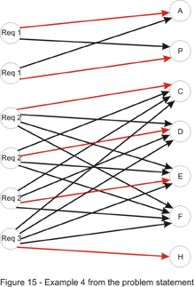
It is important to understand that any order to iterate through set A can be considered when solving the standard bipartite-matching problem. For example, it doesn't matter what element from set A we choose to be the first one to be matched. Consider the solution found by the algorithm containing this element x from A, matched with an element y from B. Also, we should consider any optimal solution. Clearly, in the optimal, y must be matched with an element z from A, otherwise we can add the pair x-y to the matching, contradicting the fact that the solution is optimal. Then, we can just exchange z with x to come with a solution of the same cardinality, which completes the proof.
That being said, to gain as much as possible from the classes already taken we first must match each of these with a requirement. If, after completing this step, all requirements are fulfilled, we just need to return the empty string, as there is no need for taking more classes. Now we have to deal with the requirement that the return must be the first in lexicographic order. It should be obvious now that the other classes must be considered in increasing order. If a match is found for a class, that class is added to the return value. In the end, if not every requirement is fulfilled, we don't have a solution. The implementation is left as an exercise for the reader.
As a final note, it is possible to speed things up a bit. To achieve this, we will drop the idea of splitting each requirement. Instead we will modify the capacities of the edges connecting those with the super-sink. They will now be equal to the number of classes to be taken for each requirement. Then we can just go on with the same approach as above.
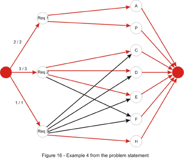
Parking
Problem Statement
In this problem we have to match each of the cars with a parking spot. Additionally the time it takes for all cars to find a parking spot must be minimized. Once again we build a bipartite graph: set A is the set that consists of the cars and set B contains the parking spots. Each edge connecting elements from different sets has as the cost (and not the capacity!) the time required for the car to get to the parking spot. If the spot is unreachable, we can assign it an infinite cost (or remove it). These costs are determined by running breadth-first search.
For solving it, assume that the expected result is less than or equal to a constant D. Then, there exists a matching in which each edge connecting a car and a parking spot has the cost less than or equal to D. Thus, removing edges with cost greater than D will have no effect on the solution. This suggests a binary search on D, removing all edges with cost greater than D, and then performing a maximum bipartite-matching algorithm. If a matching exists in which every car can drive to a parking spot, we can decrease D otherwise we must increase it.
However, there is a faster and more elegant solution using a priority-first search. Instead of keeping D fixed as above, we could try to successively increase D whenever we find that it is too low. We will start with D = 0. Then we iterate through each of the cars and try to find an augmenting path in which no edge has a cost larger than D. If none exists, we increase D until one path exists. Obviously, we will increase it with the smallest possible amount. In order to achieve this, we will search for the augmenting path with the smallest cost - the cost of the path is the maximum cost of an edge on that path. This can be done with a priority-first search similar to the PFS augmenting-path algorithm presented in the first section of the article. C++ code follows:
struct node {
int where, cost, from;
node(int _where, int _cost, int _from): where(_where),
cost(_cost), from(_from) {};
};
bool operator < (node a, node b) {
return a.cost > b.cost;
}
int minTime(vector park)
{
// build a cost matrix cost[i][j] = cost of getting from car i to
parking spot j, by doing a BFS
// vertices 0, 1, ..., N - 1 will represent the cars, and
vertices N, N + 1, ..., N + M - 1 will represent
//the parking spots; N + M will be the super-sink
int D = 0, sink = N + M;
int car_match[105], park_match[105];
memset(car_match, -1, sizeof(car_match));
memset(park_match, -1, sizeof(park_match));
for (int source = 0; source < N; ++ source) {
bool visited[210];
memset(visited, false, sizeof(visited));
int from[210];
memset(from, -1, sizeof(from));
priority_queue pq;
pq.push(node(source, 0, -1));
while (!pq.empty()) {
int cst = pq.top().cost, where = pq.top().where,
_from = pq.top().from;
pq.pop();
if (visited[where]) continue;
visited[where] = true;
from[where] = _from;
// if where is a car try all M parking spots
if (where < N) {
for (int i = 0; i < M; ++ i) {
// if the edge doesn't exist or this car
is already matched with this parking spot
if (cost[where][i] == infinity ||
car_match[where] == i) continue;
int ncst = max(cst, cost[where][i]);
// the i-th parking spot is N + i
pq.push(node(N + i, ncst, where));
}
}
else {
// if this parking spot is unmatched we found
the augmenting path with minimum cost
if (park_match[where - N] == -1) {
from[sink] = where;
// if D needs to be increased, increase it
D = max(D, cst);
break;
}
// otherwise we follow the backward edge
int next = park_match[where - N];
int ncst = max(cst, cost[next][where]);
pq.push(node(next, ncst, where));
}
}
int where = from[sink];
// if no augmenting path is found we have no solution
if (where == -1)
return -1;
// follow the augmenting path
while (from[where] > -1) {
int prev = from[where];
// if where is a parking spot the edge (prev, where)
is a forward edge and the match must be updated
if (where >= N) {
car_match[prev] = where;
park_match[where - N] = prev;
}
where = prev;
}
}
return D;
}
Here are some problems to practice:PlayingCubes - for this one ignore the low constraints and try to find a max-flow algorithm
DataFilter - be warned this is the hard problem from the TCCC 2004 Finals and is tough indeed!
Some other problems from http://acm.uva.es/p/: 563, 753, 820, 10122, 10330, 10511, 10735.
For any questions or comments please use the Forums.